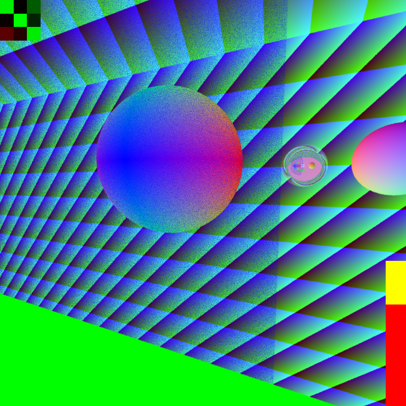

i made this in a few days in december 2024 A D
it's based on androsis's opengl experiments
it uses sdl 2 and glad with opengl version 1.3
i took a couple of screenshots
they're not compressed so you're downloading ~500kb-1mb per image and there's 50 of them
good luck with your internet bill
two planes with a uv tiled "texture" (the green and blue are the u and v coordinates)

its texture is the normal as rgb or something
mirror! - at this point, it only allowed one bounce (i was using recursion for reflections and opengl doesn't allow indefinite recursion)
also i added a framerate meter and view matrix visualizer
i fixed it so it could reflect "indefinitely" (capped at 5 bounces)
jank in front/behind i guess
i added orthographic/isometric view (and a key to smoothly interpolate between perspective and orthographic)
probably the main reason i made this
real raymarched objects in a mostly path traced world
they actually have a path traced bounding shape and then raymarch inside that shape
with this first one, i messed up the sdf a bit (centered the sphere on the origin and repeated a cube with one corner at the origin)
i fixed the sdf
after large amounts of time, floating point rounding errors mess up the random sampler i used to show the raymarched area
distance debug view
was useful to diagnose the issues with the raymarched object (i wasn't multiplying some factors)
the sphere cube in all its glory
i added a plain raymarched sphere at some point too
and of course they show up in reflections